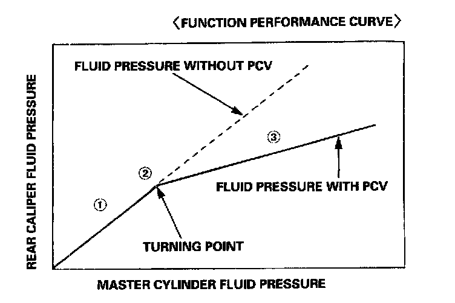
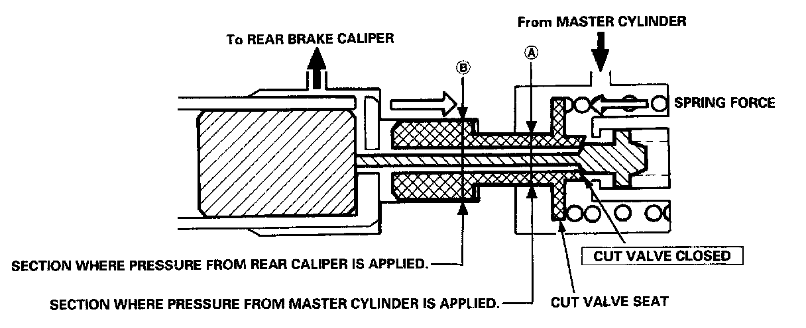

Brake Proportioning/Combination Valve: Description and Operation

Proportioning Control Valve Function:
The modulators for the rear brakes serve as proportioning control valves to prevent the rear wheels from locking if the ABS malfunctions or when the ABS is not activated. When this function is not provided, the hydraulic pressure from the master cylinder and the hydraulic pressure to the rear brake system are equal.
If the fluid pressure is transmitted to the rear brakes at the same rate as the front brakes, the rear wheels will lock first because the rear axle load becomes lighter when the brakes are applied.
To prevent the rear wheels from locking, the proportioning control valve function changes the distribution rate of the fluid pressure to the rear wheels when the pressure in the rear brake system exceeds the given value of the fluid pressure from the master cylinder. The fluid pressure point where the distribution rate changes is called the turning point.

The cut valve seat in the rear brake system has a shoulder between sections A and B. Section A, where pressure from the master cylinder is applied, has a smaller diameter than section B, where pressure from the rear brake caliper is applied. This design provides the proportioning control valve function as follows.
1. When the fluid pressure from the master cylinder is below the turning point, the cut valve seat is pushed by the spring force and the cut valve is open. Therefore, the fluid pressure from the master cylinder is transmitted to the rear brake caliper side. Under these conditions, fluid pressure from the master cylinder is equal to the pressure to the rear brake caliper, but because of the diameter difference between sections A and B, the force on the cut valve overcomes the spring force, moving the cut valve seat toward the cut valve slowly.
2. When the fluid pressure to the rear brake caliper reaches the turning point, the cut valve is closed by the cut valve seat, blocking the fluid passage between the master cylinder side and rear wheel cylinder side.
3. When the fluid from the master cylinder exceeds the turning point, the fluid pressure from the master cylinder rises, while the pressure to the rear brake caliper remains at the turning point value. As a result, the cut valve seat moves away from the cut valve and the cut valve opens. The passage between the master cylinder and caliper opens momentarily, but it is blocked again because the fluid pressure to the brake caliper rises, and the cut valve seat moves to close the cut valve. As described above, when the pressure in the master cylinder is above the turning point, the cut valve seat reduces the pressure in the rear brake caliper to the prescribed amount by repeating this process.